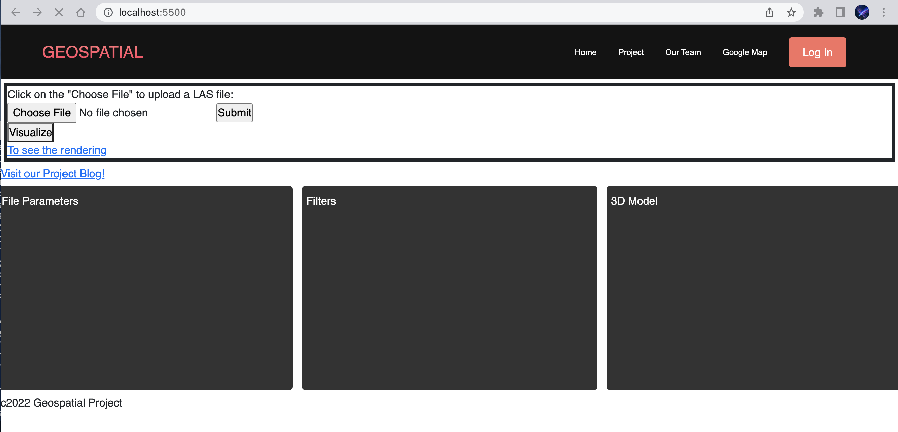

Project Update - Week 6
Sprint 5
This page summarizes the group activities and project progress in Week 6 (Novemver 6 - November 12)
Sprint 5 Tasks
- Yuhao Hua
- Troubleshoot problems with Open3D module and its dependencies
- Troubleshoot issues with Open3D on apple sillicon
- Peinan Wang
- Fixed web-visualizer issue in Sprint 4 (Using python subprocess call to execute the visualization scripts
- Implement functions on point cloud data analysis
- Luocheng Zhu
- Deploy the basic website on Heroku
- Implement a progress bar for file uploading
- Link other pages to index.html
Progress
Now we have finished our minimal viable product.
We deployed our website on Heroku but the deployed version only has basic file upload functionality
We were not able to push the entire project to Heroku. We later tried to build a Dockerfile and deploy the website through Docker. It failed again due to the dependencies issue with Open3d. 1) Open3d library require additional system dependencies which require building from source. 2) It is hard to perform headless rendering.